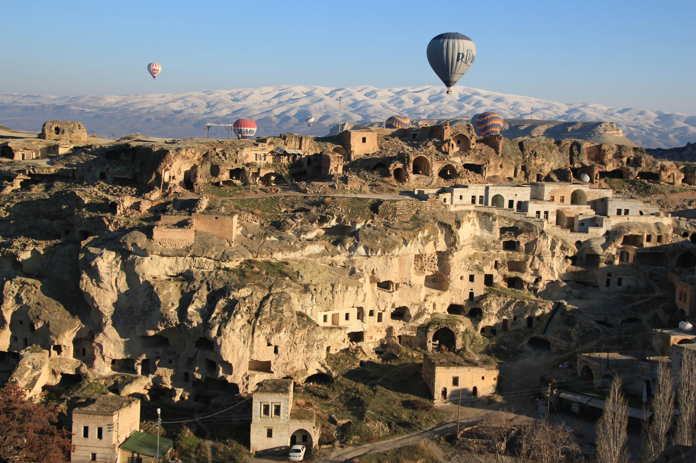
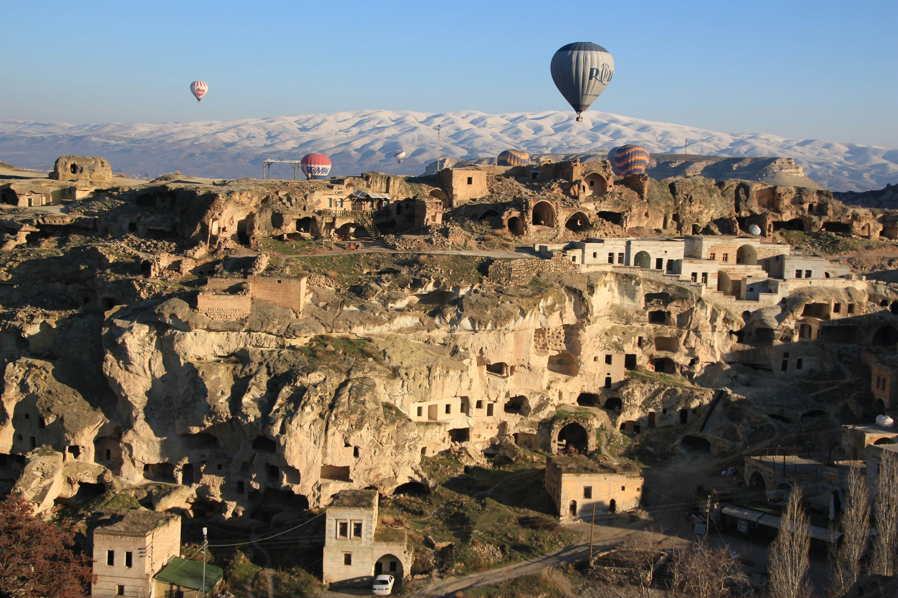

Nestled in central Turkey lies the stunning region of Cappadocia, home to some of the world’s most captivating and breathtaking mountains. This undiscovered gem has only recently gained popularity as a tourist destination, making it the perfect location for those looking to experience something truly unique and untouched. The mountains of Cappadocia are a sight to behold, with their distinctive rock formations and captivating landscapes that have been shaped by centuries of erosion and volcanic activity. The region also boasts a wealth of cultural treasures, with ancient cave dwellings and historic underground cities that date back thousands of years. For those seeking an unforgettable adventure off the beaten path, Cappadocia should be at the top of your bucket list.Cappadocia lies in eastern Anatolia, in the heartland of what is now Turkey. The relief consists of a high plateau over 1000 m in altitude that is pierced by volcanic peaks, with Mount Erciyes (ancient Argaeus) near Kayseri (ancient Caesarea) being the tallest at 3916 m. The boundaries of historical Cappadocia are vague, particularly towards the west. To the south, the Taurus Mountains form the boundary with Cilicia and separate Cappadocia from the Mediterranean Sea. To the west, Cappadocia is bounded by the historical regions of Lycaonia to the southwest, and Galatia to the northwest. Due to its inland location and high altitude, Cappadocia has a markedly continental climate, with hot dry summers and cold snowy winters. Rainfall is sparse and the region is largely semi-arid.